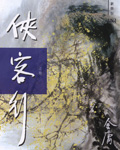

侠客行新修版
作者：金庸
最新章节：后记
作品简介：
《侠客行》(新修版)的故事情节之奇巧，时时处处出人意料，可以说无人不奇，无事不奇，让我们大开眼界，尽得读书奇快;然而，真正读完全书，再回过头来一想，又会为作者的严谨的艺术构想而惊叹。作者在这里并没有神化什么，当然也没有魔化什么，所有的传奇都指向人间的种种表象深处。金庸的创作法则是奇而致真，巧而后深，在新奇怪绝的表象背后，另有一个完整而邃的寓言世界。
作者：金庸
最新章节：后记
作品简介：
《侠客行》(新修版)的故事情节之奇巧，时时处处出人意料，可以说无人不奇，无事不奇，让我们大开眼界，尽得读书奇快;然而，真正读完全书，再回过头来一想，又会为作者的严谨的艺术构想而惊叹。作者在这里并没有神化什么，当然也没有魔化什么，所有的传奇都指向人间的种种表象深处。金庸的创作法则是奇而致真，巧而后深，在新奇怪绝的表象背后，另有一个完整而邃的寓言世界。